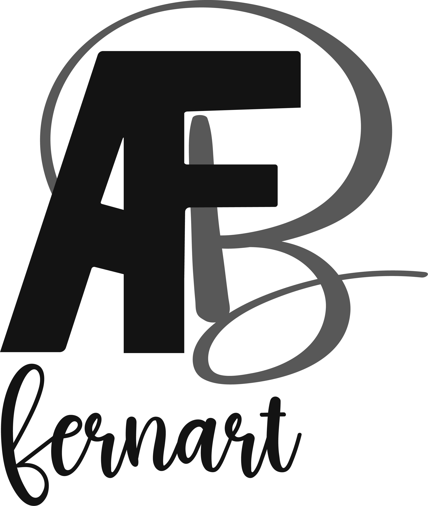

!COMIC INTERACTIVO¡
Explora la magia y el misterio de Medellín a través de sus icónicas esculturas. Acompaña a nuestros personajes en una aventura única llena de historia y arte.
PROYECTO
"La Herencia de Botero"
Es un emocionante cómic digital interactivo que transporta a los lectores a la mágica Plaza Botero en Medellín, Colombia. Inspirado por la rica historia y el arte vibrante de este icónico lugar, nuestro proyecto combina narrativa cautivadora, ilustraciones impresionantes y tecnología interactiva para ofrecer una experiencia única.
Desde un punto elevado, la imagen muestra una vista panorámica de Medellín en una noche lluviosa. Las luces de la ciudad parpadean a través de la niebla, creando un ambiente suave y difuso. En primer plano, se puede ver una casa acogedora con una luz cálida brillando a través de las ventanas, ofreciendo un contraste con la oscuridad y la lluvia que rodean el paisaje urbano.
Desde un punto elevado, la imagen muestra una vista panorámica de Medellín en una noche lluviosa. Las luces de la ciudad parpadean a través de la niebla, creando un ambiente suave y difuso. En primer plano, se puede ver una casa acogedora con una luz cálida brillando a través de las ventanas, ofreciendo un contraste con la oscuridad y la lluvia que rodean el paisaje urbano.
SIPNOSIS
En una noche lluviosa en Medellín, Génesis relata a su hijo Juan la historia de la Plaza Botero, donde las esculturas cobran vida para proteger su hogar del intruso Pedro. A través de la confrontación y el perdón, Pedro aprende la importancia del respeto al arte. La historia deja una profunda impresión en Juan, mientras Génesis reflexiona sobre el poder transformador de las historias. La magia de la Plaza Botero perdura, recordando la armonía y la belleza del arte en el mundo.
HISTORIA
En una noche lluviosa en la bulliciosa ciudad de Medellín, Colombia, una madre y su hijo se reúnen en la intimidad de su hogar. Con un antiguo libro en mano, la madre comienza a relatar una historia sobre la misteriosa Plaza Botero. Según sus palabras, cuando la luna ilumina las esculturas de la plaza, estas cobran vida en un espectáculo único y asombroso. A medida que la madre narra, el hijo se sumerge en el relato, imaginando las esculturas tomando vida bajo la luz de la luna. Pero lo que comienza como una experiencia mágica pronto se convierte en una emocionante aventura cuando un intruso amenaza con profanar este sagrado lugar.
PERSONAJES
Las esculturas, conscientes de la intrusión, se unen para proteger su hogar, desencadenando un enfrentamiento épico entre el arte y la invasión. ¿Podrán las esculturas defender la Plaza Botero de este vándalo despiadado? ¿Qué secretos más oculta esta mágica plaza? Para descubrir la verdad detrás de "La Herencia de Botero", únete a nosotros y sumérgete en esta emocionante historia llena de misterio, magia y acción. Visita nuestra página para leer la historia completa y desvelar los secretos que aguardan en la Plaza Botero. Te esperamos en esta fascinante aventura donde el arte cobra vida y la intriga nunca cesa.
PLAZA BOTERO
La Plaza Botero es un lugar icónico ubicado en Medellín, Colombia. Llamada así en honor al famoso escultor colombiano Fernando Botero, la plaza alberga una colección de 23 esculturas monumentales creadas por él mismo. Botero es conocido por su estilo distintivo que caracteriza figuras infladas y redondeadas, lo que ha ganado reconocimiento internacional. La Plaza Botero se encuentra en el centro de Medellín, en el sector de La Candelaria, y es un destino popular tanto para los turistas como para los locales. Las esculturas de Botero están distribuidas alrededor de la plaza al aire libre, lo que permite a los visitantes pasear y apreciar las obras desde diferentes ángulos.
DATOS CURIOSOS SOBRE FERNANDO BOTERO
Fernando Botero, nacido en Medellín, Colombia, en 1932, es uno de los artistas más reconocidos internacionalmente de América Latina. Su distintivo estilo, conocido como "Boterismo", ha dejado una huella imborrable en el mundo del arte contemporáneo. A través de sus obras, Botero ofrece una visión única y caricaturesca del mundo que lo rodea, caracterizada por figuras voluptuosas y exageradas.
SOBRE NOSOTROS
Breiner Perez
Web Dev
Soy Breiner perez un productor de multimedia especializado en la maquetacion de paginas web utilizando html, css, bootstrap y javascript
Sebastian Varela
Web Dev
Soy Sebastian un productor de multimedia especializado en la illustracion la animacion, edicion de fotografia y edicion de audio y video